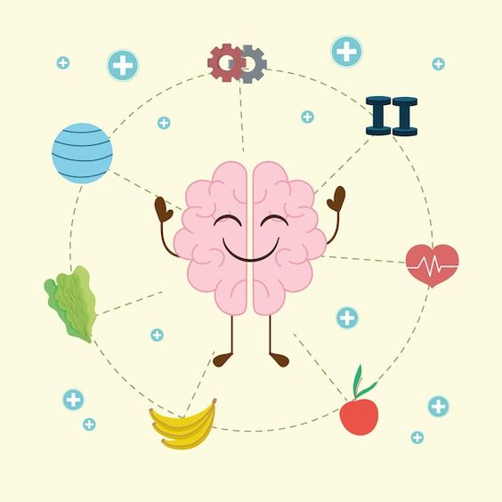
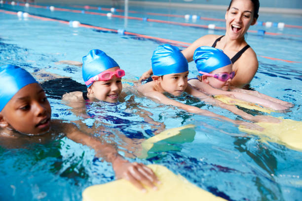
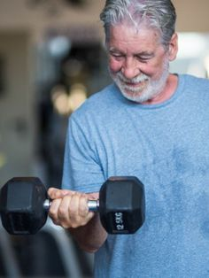
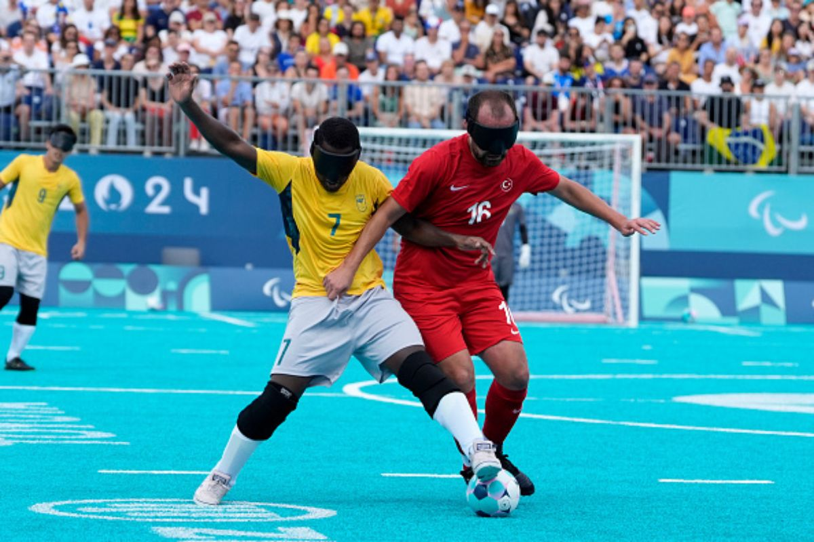

Para cuidar da saúde, é fundamental contar com acompanhamento médico, que proporciona um direcionamento adequado e específico em relação à alimentação, à prática de atividades físicas e ao descanso necessário para a recuperação. A orientação de um profissional qualificado permite identificar as necessidades individuais e promover um estilo de vida equilibrado e saudável. Além disso, é importante atentar-se às necessidades do próprio corpo e realizar ajustes conforme necessário.
Mas como posso cuidar melhor da minha saúde?
Qual profissional devo procurar?
O médico esportivo é uma execelente escolha para lhe auxiliar nesse processo. Ele tem o papel crucial para quem busca aumentar a sua performance, sendo atleta ou não.
Porque médico do esporte?
A Medicina do Esporte tem como objetivo investigar a influência dos exercícios físicos sobre pessoas sadias ou doentes. E, assim, prevenir, tratar e reabilitar lesões, dores crônicas e patologias variadas.

Dicas para cuidar da saúde
Mantenha uma alimentação saudável e equilibrada. Pratique exercícios físicos regularmente. Consulte um médico regularmente. Não esqueça do protetor solar. Faça do sono uma de suas prioridades. Beba água frequentemente. Elimine de vez o cigarro.
A prática de atividade física é para todos

A natação é uma atividade que pode trazer vários benefícios para as crianças, como:
Desenvolvimento psicomotor: A natação ajuda a melhorar a coordenação, a força, a agilidade, a flexibilidade, o equilíbrio e a postura.
Fortalecimento do sistema cardiorrespiratório:A natação estimula a respiração correta, o que pode ajudar em quadros de asma, rinite, bronquite e outras doenças.

A prática de atividade física na terceira idade é importante para a saúde e qualidade de vida dos idosos
Melhora a capacidade de movimento: A atividade física ajuda a manter a autonomia e independência para realizar as tarefas do dia a dia.
Melhora a cognição: A atividade física faz bem ao cérebro dos idosos, ajudando a preservar a cognição.
Previne doenças: A prática regular de atividade física ajuda a prevenir e combater doenças associadas ao sedentarismo, como doenças do coração, osteoporose, diabetes, entre outras

O Futebol também é um esporte de inclusão, com modalidade paralímpica.
O futebol de cegos é uma ferramenta para promover o respeito às diferenças e a inclusão.
O esporte adaptado, como o futebol de cegos, possibilita a realização pessoal e a competição sem restrições
O futebol é um esporte popular que pode ser praticado por diversas pessoas, adaptando-se a diferentes situações
Não há uma idade correta para iniciar, o importante é prática algum esporte!
Nosso site é um ponto de encontro entre paciente e o médico
Nós da Psa temos como finalidade ser um intermédio entre o paciente e o médico. Onde você médico recém formado pode se cadastrar no site e a partir do cadastro iremos direcionar os possíveis pacientes que queiram ter um atendimento específico e direcionado.
A partir do cadastro no site pode ocorrer um direcionamento e indicações específica para o paciente encontrar o médico que lhe proporcione o atendimento ideal e exclusivo.